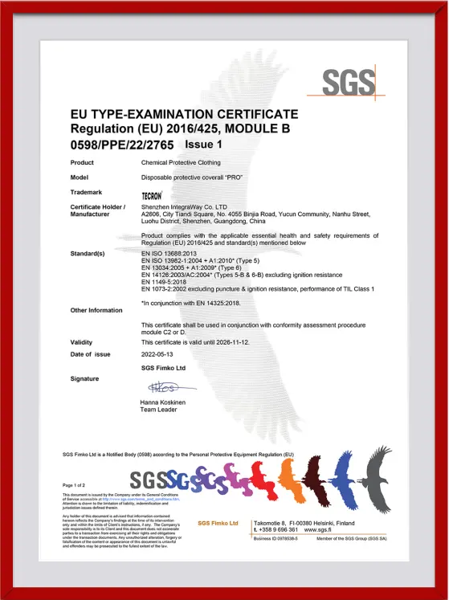
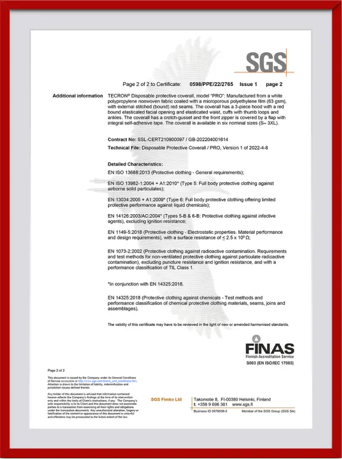

Компания IntegraWay Co., LTD является производителем продукции под торговой маркой TECRON. Основная цель компании - разработка и выпуск качественных средств индивидуальной защиты, которые максимально эффективно защищают работников различных индустрий и промышленности от вредных факторов на производстве. Мы также уделяем особое внимание комфортности и эргономики использования продукции TECRON, так как удобство СИЗ повышает эффективность сотрудников, и соответветственно производственные показатели всех компаний, которые пользуются продукцией TECRON. Производство продукции TECRON расположено в материковом Китае, наши сотрудники постоянно контролируют производственный процесс, а также процесс разработки новой продукции.
О компании
История бренда TECRON начинается с 2015 года, когда был разработан универсальный защитный одноразовый комбинезон TECRON Pro. Данная модель была разработана на основе пожеланий и требований работников химической и нефтегазовой промышленности. Главный упор в данной модели был сделан на максимальную защиту и комфорт. Специально для этой модели был разработан уникальный тип манжетов, аналогов которых не было в то время на рынке. Комбинезон за несколько лет приобрел популярность и его начали применять в остальных отраслях: авто покраска, малярные работы, химическая обработка и дезинфекция, пищевая промышленность и так далее. В 2016 году был выпущена более простая модель комбинезона TECRON Classic Light - одноразовый комбинезон для менее опасных производств. На сегодняшний день, TECRON это не только защитные комбинезоны, но и ряд других типов средств защит. Ежегодно ассортимент нашей продукции пополняется новыми моделями. Продукция торговой марки TECRON имеет сертификацию CE и EAC, и удовлетворяет требованиям соответствующих стандартов качества.
Евро сертификация


Мы проработали весь пакет нормативных документов, необходимых для организации работы, как с юридическими, так и с физическими лицами. Плодотворная работа партнеров основана на необходимых документах, помогающих строго регламентировать обязанности сторон. В соответствующих разделах представлены все документы, которые могут пригодиться в штатной рабочей ситуации.